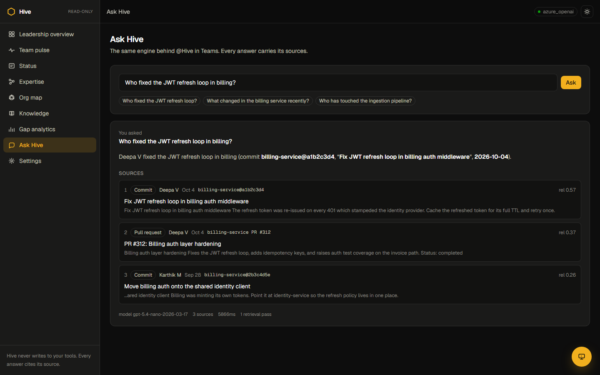
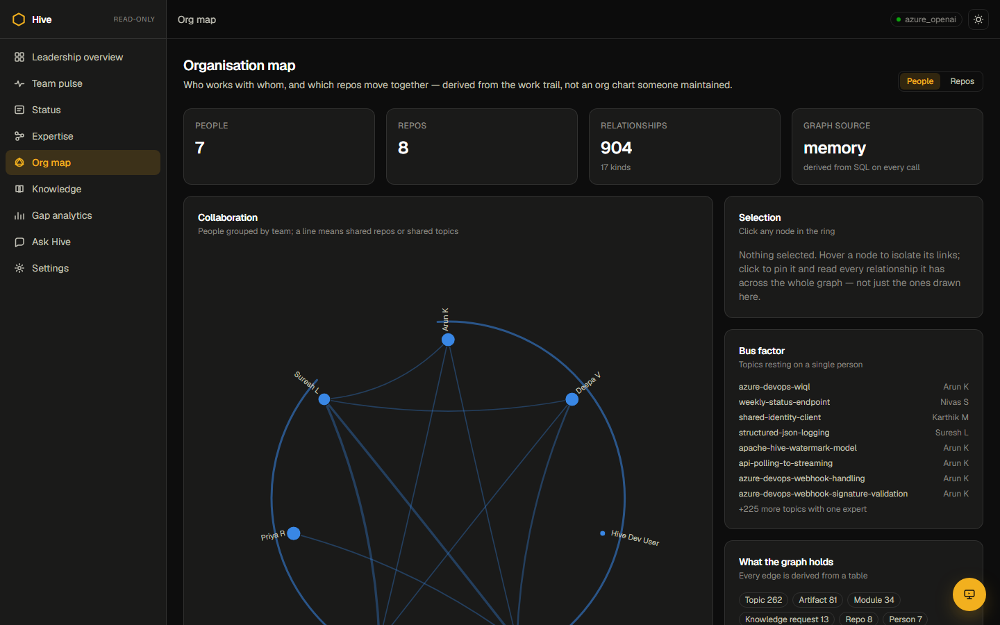
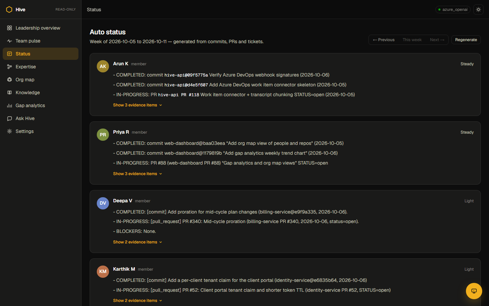

Internal hackathon · Reimagine
A team's memory, built automatically from the work it already does. Ask it anything and get an answer with the commit or PR behind it.
The problem
Days of asking around, and the same questions answered again and again.
The team picture gets rebuilt every week from memory rather than evidence.
When someone moves on, what they knew leaves with them. Nobody sees the risk coming.
What Hive does
No new tool and no data entry. Nobody changes how they work.
Every claim links to the commit, PR or answer behind it.
Hive can't send, commit or update anything. It only observes and answers.
Capabilities
Plain-English answers over the work trail, every claim cited
Expertise scored from real commits and answers, not skill tags
People, repos, topics and questions linked in Neo4j
Each person's weekly update drafted from their work
Unanswered questions sent to the likely expert, then indexed
What else moves when a repo changes, and who to tell
“Has anyone hit this error before?” Who fixed it, and how
Repos and topics that rest on a single person
How the AI works
Weak evidence? It rewrites the query and retries once. Still nothing? It says so and routes the question to the expert. Built as a LangGraph state machine on Azure OpenAI.
Live · Ask Hive
“Who fixed the JWT refresh loop in billing?” Hive names the person and date, and cites the commit and PR.

Claude + MCP · Hive in the editor
Getting a token refresh loop on 401s in billing auth. Has anyone seen this?
▸ hive_prior_art("401 errors cause a token refresh loop in billing auth")
1. Deepa V: Fix JWT refresh loop in billing auth middleware · 2d ago
billing-service@a1b2c3d4 · services/billing/auth_middleware.py
“Cache the refreshed token for its full TTL and retry once.”
Your team already fixed this. I'll apply the same pattern; Deepa is the person to ask.
hive_prior_art: has the team hit this before?hive_blast_radius: what moves if I change this?hive_area_briefing: brief me on unfamiliar codehive_who_knows: who has evidence on a topichive_ask: any question, with citationshive_raise_request: log a gap, route to an expertRuns locally over stdio · claude mcp add hive
Knowledge graph · Neo4j
(Person)-[:KNOWS]->(Topic)(Person)-[:AUTHORED|REVIEWED]->(Artifact)(Artifact)-[:IN_REPO]->(Repo)(Person)-[:ASKED|ANSWERED]->(KR)(Person)-[:COLLABORATES_WITH]->(Person)(Repo)-[:COUPLED_WITH]->(Repo)MATCH (p:Hive {kind:'person'})
-[r:REL {kind:'KNOWS'}]->
(t:Hive {kind:'topic'})
WITH t, collect(p) AS knowers
WHERE size(knowers) = 1
RETURN t.label AS bus_factor_risk
Neo4j via Bolt or Aura's HTTPS Query API, with an in-memory fallback.
Live · Org map & auto status


Under the hood
Hive
Next: Azure DevOps, then email and meetings, all through the same pipeline.